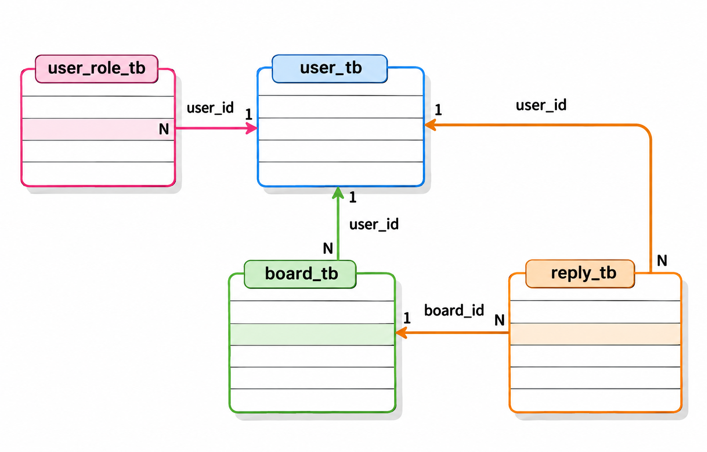
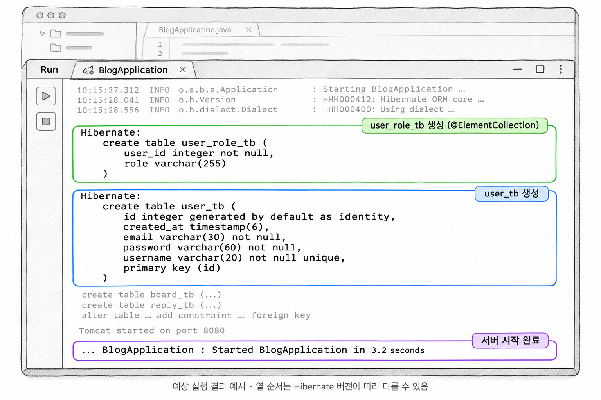

2장. 엔티티와 더미 데이터 만들기
1. User 엔티티
1.1 UserDetails 구현하기
UserDetails는 스프링 시큐리티가 사용자 한 명의 정보를 읽을 때 쓰는 인터페이스입니다. 시큐리티는 개발자가 만든 회원 클래스의 구조를 모릅니다. 그래서 아이디, 비밀번호, 권한을 UserDetails에 정해진 메서드 이름으로 꺼내 갑니다. User 엔티티가 이 인터페이스를 구현하면 DB에서 조회한 회원 객체를 그대로 로그인한 사용자로 쓸 수 있습니다.
반드시 구현해야 하는 메서드는 세 개입니다.
| 메서드 | 돌려주는 값 | User 엔티티에서 채우는 방법 |
|---|---|---|
getUsername() | 아이디 | Lombok @Getter가 만든 메서드 |
getPassword() | 암호화된 비밀번호 | Lombok @Getter가 만든 메서드 |
getAuthorities() | 권한 목록 | 직접 작성(1.3에서 설명) |
isAccountNonExpired(), isAccountNonLocked(), isCredentialsNonExpired(), isEnabled()는 계정 상태를 묻는 메서드입니다. 스프링 시큐리티 6.3부터는 이 네 메서드가 true를 돌려주는 기본 메서드로 인터페이스 안에 들어 있습니다. 계정 정지나 휴면 정책이 없으면 따로 작성하지 않습니다.
예제 2-1 — User 엔티티 만들기
이어서: 예제 1-2
파일명: src/main/java/com/newtenco/blog/user/User.java
package com.newtenco.blog.user;
import jakarta.persistence.*;
import lombok.*;
import org.hibernate.annotations.CreationTimestamp;
import org.springframework.security.core.GrantedAuthority;
import org.springframework.security.core.authority.SimpleGrantedAuthority;
import org.springframework.security.core.userdetails.UserDetails;
import java.sql.Timestamp;
import java.util.ArrayList;
import java.util.Collection;
import java.util.List;
@NoArgsConstructor
@AllArgsConstructor
@Builder
@Getter
@Entity
@Table(name = "user_tb")
public class User implements UserDetails {
@Id
@GeneratedValue(strategy = GenerationType.IDENTITY)
private Integer id;
@Column(unique = true, length = 20, nullable = false)
private String username;
@Column(length = 60, nullable = false)
private String password;
@Column(length = 30, nullable = false)
private String email;
// 권한 목록은 user_role_tb 테이블에 한 줄씩 저장된다
// EAGER: 회원을 조회할 때 권한도 함께 가져온다
@ElementCollection(fetch = FetchType.EAGER)
@CollectionTable(name = "user_role_tb", joinColumns = @JoinColumn(name = "user_id"))
@Column(name = "role")
@Builder.Default
private List<String> roles = new ArrayList<>(List.of("USER"));
@CreationTimestamp
private Timestamp createdAt;
public void update(String email, String password) {
this.email = email;
this.password = password;
}
// hasRole("USER")로 검사하려면 권한 이름 앞에 ROLE_ 이 있어야 한다
@Override
public Collection<? extends GrantedAuthority> getAuthorities() {
return roles.stream()
.map(role -> new SimpleGrantedAuthority("ROLE_" + role))
.toList();
}
}getUsername()과 getPassword()를 직접 작성하지 않아도 컴파일됩니다. @Getter가 필드 이름에 맞춰 같은 이름의 메서드를 만들기 때문입니다. 필드 이름을 userId나 pwd로 바꾸면 만들어지는 메서드 이름도 달라집니다. 그러면 인터페이스의 메서드를 구현하지 못해 컴파일 오류가 납니다. 필드 이름은 username, password로 둡니다.
password 열의 길이가 60인 것은 BCrypt로 암호화한 값이 60자이기 때문입니다. DB에는 평문 비밀번호를 저장하지 않습니다.
1.2 권한 목록과 @ElementCollection
회원 한 명이 권한을 여러 개 가질 수 있습니다. 일반 회원은 USER 하나만 갖고, 관리자는 USER와 ADMIN을 함께 갖습니다. 권한을 "USER,ADMIN"처럼 한 칸에 쉼표로 이어 넣으면 1차 정규화 규칙에 어긋납니다. 한 칸에는 값을 하나만 두어야 하기 때문입니다. 권한 하나만 지우거나 특정 권한을 가진 회원을 찾을 때마다 문자열을 잘라야 하는 불편도 생깁니다.
@ElementCollection은 엔티티가 아닌 값의 모음(여기서는 List<String>)을 별도 테이블에 저장하는 JPA 어노테이션입니다. 권한용 엔티티 클래스를 따로 만들지 않아도 JPA가 테이블을 만들고 회원 id로 연결합니다.
| 어노테이션 | 하는 일 |
|---|---|
@ElementCollection(fetch = FetchType.EAGER) | roles를 별도 테이블에 저장하고, 회원을 조회할 때 함께 읽어 옵니다 |
@CollectionTable(name = "user_role_tb", ...) | 테이블 이름을 user_role_tb로, 회원을 가리키는 외래 키 열을 user_id로 정합니다 |
@Column(name = "role") | 권한 값을 담는 열 이름을 role로 정합니다 |
@Builder.Default | 빌더로 회원을 만들 때도 기본값 USER가 들어가게 합니다 |
두 테이블에는 다음처럼 저장됩니다. cos는 권한이 두 개라서 user_role_tb에 두 줄이 생깁니다.
user_tb
| id | username |
|---|---|
| 1 | ssar |
| 2 | cos |
user_role_tb
| user_id | role |
|---|---|
| 1 | USER |
| 2 | USER |
| 2 | ADMIN |
EAGER를 직접 적은 것은 지연 로딩 때문입니다. @ElementCollection은 기본값이 지연 로딩(LAZY)이라서 값을 실제로 쓰는 순간에야 DB에서 읽어 옵니다. 그런데 1장에서 spring.jpa.open-in-view=false로 설정했으므로 서비스의 트랜잭션이 끝나면 DB 연결이 반납됩니다. 그 뒤에 시큐리티가 getAuthorities()를 부르면 아직 읽지 않은 권한을 가져오지 못해 LazyInitializationException이 발생합니다. 권한은 회원을 쓸 때마다 필요한 값이므로 처음부터 함께 가져옵니다.
@Builder.Default도 빼면 안 됩니다. 이 어노테이션이 없으면 빌더는 필드에 적은 초기값을 무시합니다. 그래서 User.builder()...build()로 만든 객체의 roles가 null이 됩니다. 7장의 회원가입은 빌더로 회원을 만들기 때문에, 새 회원이 USER 권한을 자동으로 받으려면 이 어노테이션이 필요합니다.
1.3 getAuthorities()와 ROLE_ 접두사
getAuthorities()는 회원의 권한 목록을 시큐리티가 이해하는 GrantedAuthority 객체 목록으로 바꿔 돌려줍니다. GrantedAuthority는 사용자에게 허락된 권한 하나를 나타내는 인터페이스입니다. SimpleGrantedAuthority는 권한 이름 문자열 하나를 담는 기본 구현체입니다.
DB에는 USER, ADMIN만 저장하고, 돌려줄 때 앞에 ROLE_을 붙입니다. 6장에서는 접근 규칙을 hasRole("ADMIN")으로 씁니다. 이때 시큐리티는 ROLE_ADMIN이라는 권한이 있는지 검사합니다. getAuthorities()에서 ROLE_을 붙이지 않으면 관리자 계정으로도 관리자 API에 들어가지 못합니다.
| DB의 role 값 | getAuthorities()가 돌려주는 권한 | 6장에서 검사하는 방법 |
|---|---|---|
| USER | ROLE_USER | hasRole("USER") |
| ADMIN | ROLE_ADMIN | hasRole("ADMIN") |
접두사를 붙이는 코드는 getAuthorities() 한 곳에만 있습니다. 그래서 DB 값과 접근 규칙 코드에는 ROLE_ 없이 읽기 쉬운 이름만 씁니다.
2. Board · Reply 엔티티
이 책에서는 게시글과 댓글 API를 만들지 않습니다. 회원과 다른 데이터가 연결된 실제 프로젝트 구조를 갖추려고 테이블만 준비합니다. 나중에 게시판 API로 확장할 때 이 엔티티를 그대로 쓸 수 있습니다.

그림 2-1처럼 게시글은 작성자 한 명을 가리키고, 댓글은 작성자 한 명과 게시글 하나를 가리킵니다. 외래 키는 모두 N 쪽 테이블에 생깁니다.
예제 2-2 — 게시글과 댓글 엔티티 만들기
이어서: 예제 2-1
파일명: src/main/java/com/newtenco/blog/board/Board.java
package com.newtenco.blog.board;
import com.newtenco.blog.reply.Reply;
import com.newtenco.blog.user.User;
import jakarta.persistence.*;
import lombok.Builder;
import lombok.Getter;
import lombok.NoArgsConstructor;
import org.hibernate.annotations.CreationTimestamp;
import java.sql.Timestamp;
import java.util.ArrayList;
import java.util.List;
@NoArgsConstructor
@Getter
@Entity
@Table(name = "board_tb")
public class Board {
@Id
@GeneratedValue(strategy = GenerationType.IDENTITY)
private Integer id;
@Column(length = 100, nullable = false)
private String title;
@Column(length = 1000, nullable = false)
private String content;
// 게시글(N) : 회원(1) -> 외래 키 user_id 는 board_tb 에 생긴다
@ManyToOne(fetch = FetchType.LAZY)
private User user;
// 연관관계의 주인이 아님(mappedBy) -> 조회 전용
@OneToMany(mappedBy = "board", fetch = FetchType.LAZY, cascade = CascadeType.REMOVE)
private List<Reply> replies = new ArrayList<>();
@CreationTimestamp
private Timestamp createdAt;
@Builder
public Board(Integer id, String title, String content, User user, Timestamp createdAt) {
this.id = id;
this.title = title;
this.content = content;
this.user = user;
this.createdAt = createdAt;
}
public void update(String title, String content) {
this.title = title;
this.content = content;
}
}파일명: src/main/java/com/newtenco/blog/reply/Reply.java
package com.newtenco.blog.reply;
import com.newtenco.blog.board.Board;
import com.newtenco.blog.user.User;
import jakarta.persistence.*;
import lombok.Builder;
import lombok.Getter;
import lombok.NoArgsConstructor;
import org.hibernate.annotations.CreationTimestamp;
import java.sql.Timestamp;
@NoArgsConstructor
@Getter
@Entity
@Table(name = "reply_tb")
public class Reply {
@Id
@GeneratedValue(strategy = GenerationType.IDENTITY)
private Integer id;
@Column(length = 100, nullable = false)
private String comment;
@ManyToOne(fetch = FetchType.LAZY)
private User user;
// 연관관계의 주인: 외래 키 board_id 를 관리한다
@ManyToOne(fetch = FetchType.LAZY)
private Board board;
@CreationTimestamp
private Timestamp createdAt;
@Builder
public Reply(Integer id, String comment, User user, Board board, Timestamp createdAt) {
this.id = id;
this.comment = comment;
this.user = user;
this.board = board;
this.createdAt = createdAt;
}
}연관관계 매핑은 SSR 게시판에서 써 본 방식과 같습니다. 여기서는 3절의 더미 데이터와 이어지는 부분만 짚습니다.
| 어노테이션 | 위치 | 역할 |
|---|---|---|
@ManyToOne | Board.user, Reply.user, Reply.board | N:1 관계입니다. 외래 키가 이 엔티티의 테이블에 생기며, 이쪽이 연관관계의 주인입니다 |
@OneToMany(mappedBy = "board") | Board.replies | 주인이 아니므로 외래 키를 바꾸지 못하고 조회만 합니다 |
외래 키 열 이름은 필드 이름_참조 테이블의 기본 키 이름 규칙으로 정해집니다. 그래서 Board.user는 user_id, Reply.board는 board_id 열이 됩니다. 3절의 data.sql은 이 열 이름으로 값을 넣습니다. mappedBy의 "board"는 열 이름이 아니라 Reply 클래스의 필드 이름입니다.
cascade = CascadeType.REMOVE를 적으면 게시글을 지울 때 딸린 댓글도 함께 지워집니다. 이 설정이 없으면 댓글이 달린 게시글을 지울 때 외래 키 제약 때문에 삭제가 실패합니다.
3. 더미 데이터 넣기
3.1 data.sql 작성
더미 데이터는 개발 중에 API 동작을 확인하려고 미리 넣어 두는 시험용 데이터입니다. 1장 4.2에서 spring.sql.init.data-locations=classpath:db/data.sql로 파일 위치를 정하고 빈 파일을 만들어 두었습니다. spring.jpa.defer-datasource-initialization=true 설정 덕분에 이 파일은 JPA가 테이블을 만든 다음에 실행됩니다. H2 메모리 DB는 서버를 켤 때마다 빈 상태로 시작하므로, 실행할 때마다 같은 데이터가 다시 들어갑니다.
예제 2-3 — 더미 데이터 넣기
이어서: 예제 2-2
파일명: src/main/resources/db/data.sql
-- 비밀번호는 모두 1234 를 BCrypt 로 암호화한 값이다
insert into user_tb (username, password, email, created_at) values ('ssar', '$2a$10$eiDus5jn3LsNyfjng4/HxukQh.7EZmn1ZNL1g4s3kkqPYpwY5DiuO', 'ssar@metacoding.com', now());
insert into user_tb (username, password, email, created_at) values ('cos', '$2a$10$eiDus5jn3LsNyfjng4/HxukQh.7EZmn1ZNL1g4s3kkqPYpwY5DiuO', 'cos@metacoding.com', now());
-- 권한은 한 줄에 하나씩 (ssar: USER / cos: USER, ADMIN)
insert into user_role_tb (user_id, role) values (1, 'USER');
insert into user_role_tb (user_id, role) values (2, 'USER');
insert into user_role_tb (user_id, role) values (2, 'ADMIN');
insert into board_tb (title, content, user_id, created_at) values ('제목1', '내용1', 1, now());
insert into board_tb (title, content, user_id, created_at) values ('제목2', '내용2', 1, now());
insert into board_tb (title, content, user_id, created_at) values ('제목3', '내용3', 1, now());
insert into board_tb (title, content, user_id, created_at) values ('제목4', '내용4', 2, now());
insert into board_tb (title, content, user_id, created_at) values ('제목5', '내용5', 2, now());
insert into reply_tb (comment, board_id, user_id, created_at) values ('댓글1', 4, 2, now());
insert into reply_tb (comment, board_id, user_id, created_at) values ('댓글2', 4, 2, now());
insert into reply_tb (comment, board_id, user_id, created_at) values ('댓글3', 4, 2, now());
insert into reply_tb (comment, board_id, user_id, created_at) values ('댓글4', 5, 1, now());
insert into reply_tb (comment, board_id, user_id, created_at) values ('댓글5', 5, 1, now());데이터는 참조되는 테이블부터 넣습니다. user_role_tb, board_tb, reply_tb는 모두 user_tb의 id를 외래 키로 가리킵니다. 회원보다 권한이나 게시글을 먼저 넣으면 외래 키 제약 위반이 일어나 서버가 시작하지 못합니다. 댓글을 게시글 다음에 넣는 것도 같은 이유입니다.
user_id에 1과 2를 바로 적을 수 있는 것은 IDENTITY 전략이 id를 1부터 차례로 붙이기 때문입니다. 먼저 넣은 ssar가 1번, cos가 2번이 됩니다.
권한을 user_role_tb에 직접 넣는 것은 엔티티의 기본값이 SQL에는 적용되지 않기 때문입니다. 엔티티에 적은 기본값 USER는 자바에서 객체를 만들 때만 들어갑니다. SQL로 user_tb에 바로 넣은 행에는 이 기본값이 들어가지 않습니다.
3.2 테스트 계정(ssar · cos, 비밀번호 1234)
로그인 실습에서는 다음 두 계정을 씁니다.
| 아이디 | 비밀번호 | 권한 | 쓰임 |
|---|---|---|---|
| ssar | 1234 | USER | 일반 회원으로 요청할 때 |
| cos | 1234 | USER, ADMIN | 관리자 API를 요청할 때 |
password 열에 들어 있는 값은 1234가 아니라 $2a$10$로 시작하는 60자 문자열입니다. 1234를 BCrypt로 암호화한 값입니다. 로그인할 때는 평문 1234를 입력하고, 서버가 입력값과 저장된 암호문을 비교합니다. 암호화와 비교 원리는 7장에서 설명합니다.
4. 지금 확인할 수 있는 것
4.1 서버 실행 로그에서 테이블 생성 확인
아직 컨트롤러와 시큐리티 설정이 없어서 API로는 확인할 수 없습니다. 대신 서버를 실행하고, 엔티티가 테이블로 만들어졌는지 로그에서 봅니다. 1장에서 spring.jpa.show-sql=true와 format_sql=true를 켜 두었으므로 Hibernate가 실행한 DDL이 줄을 맞춰 콘솔에 출력됩니다.
IntelliJ에서 BlogApplication의 main()을 실행합니다.
실행 결과
콘솔에 create table 문이 네 개 출력됩니다. 다음은 그중 user_tb와 user_role_tb 부분입니다.
Hibernate:
create table user_role_tb (
user_id integer not null,
role varchar(255)
)
Hibernate:
create table user_tb (
id integer generated by default as identity,
created_at timestamp(6),
email varchar(30) not null,
password varchar(60) not null,
username varchar(20) not null unique,
primary key (id)
)board_tb와 reply_tb도 같은 형식으로 출력됩니다. 열 순서와 unique 제약의 표기는 Hibernate 버전에 따라 다를 수 있습니다 [확인 필요]. 이어서 alter table ... add constraint ... foreign key 문이 나오면서 외래 키가 연결됩니다.

생성형 예시 · 실제 실행 안 함
로그에서는 @Table에 적은 이름대로 테이블이 생겼는지, @ElementCollection 때문에 user_role_tb가 따로 생겼는지 확인합니다. 서버가 Started BlogApplication까지 오류 없이 떴는지도 봅니다.
data.sql의 insert 문은 로그에 보이지 않습니다. insert 문은 Hibernate가 아니라 스프링이 JDBC로 직접 실행하기 때문에 show-sql 로그에 나오지 않습니다. 서버가 정상으로 떴다면 data.sql도 오류 없이 실행된 것입니다. 열 이름이 틀렸거나 넣는 순서가 잘못되었다면 서버가 시작하지 못하고 SQL 오류를 출력합니다. 들어간 데이터는 6장에서 H2 콘솔을 연 뒤 직접 조회합니다.